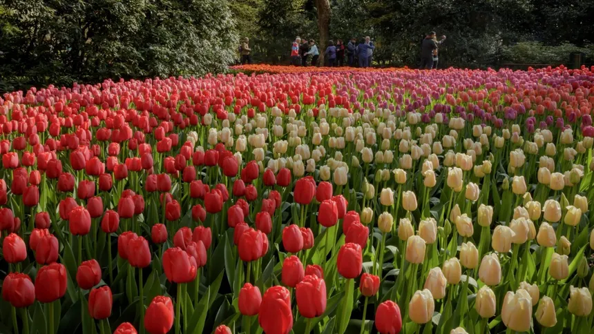
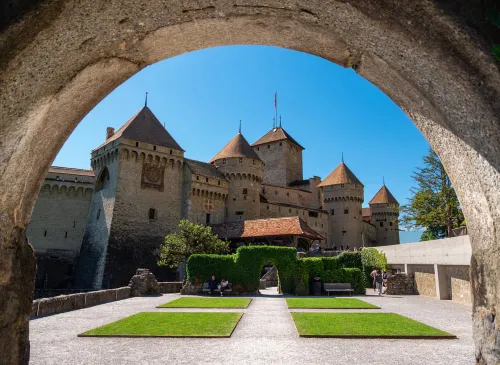
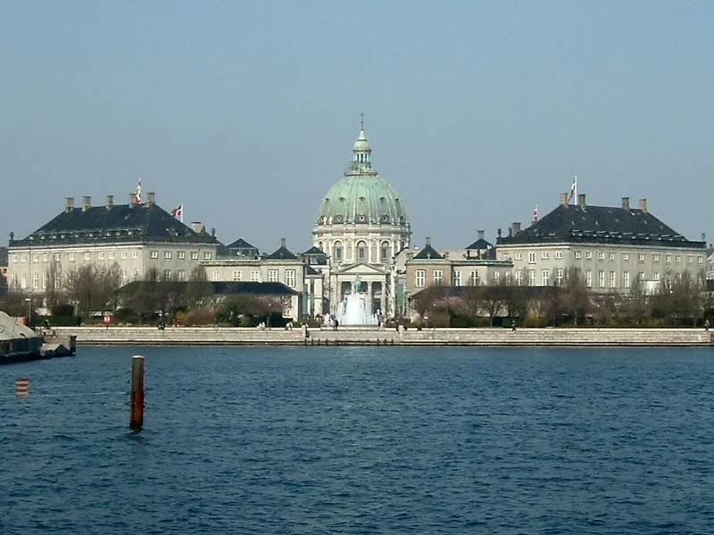

Bem-vindo(a) ao maior site de turismo na Europa.
Sobre nós
Somos o seu guia online definitivo para explorar os tesouros do continente europeu! Navegue pelo nosso site para encontrar guias detalhados de destinos, sugestões de itinerários, passagens com descontos, recomendações de hotéis e restaurantes, e muito mais.
Conheça alguns dos nossos favoritos:
Keukenhof
Keukenhof (em português: "Quintal da Chapaceira"), também conhecida como o Jardim da Europa, situada perto de Lisse, nos Países Baixos, é o maior jardim de flores do mundo.
Castelo de Chillon
O Castelo de Chillon (em francês: Château de Chillon) é um dos castelos da Suíça mais conhecidos em todo o mundo, além de ser o monumento suíço mais visitado e um dos mais bem preservados da Europa, estando classificado como monumento histórico.
Palácio de Amalienborg
O Palácio de Amalienborg (em dinamarquês: Amalienborg) é a residência oficial de inverno da família real dinamarquesa na cidade de Copenhague.
